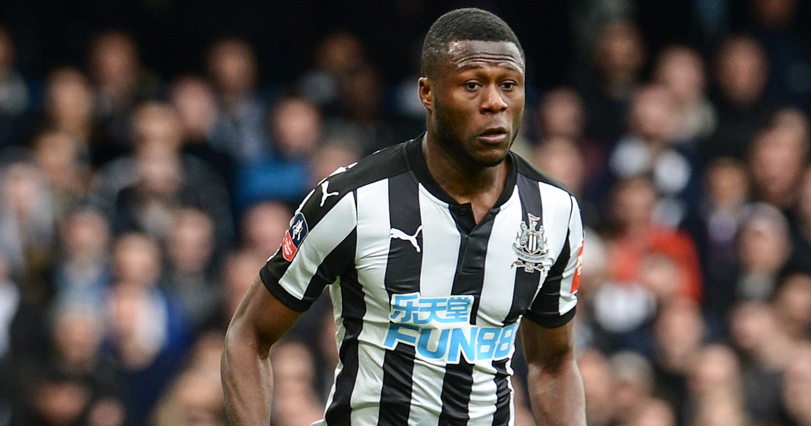
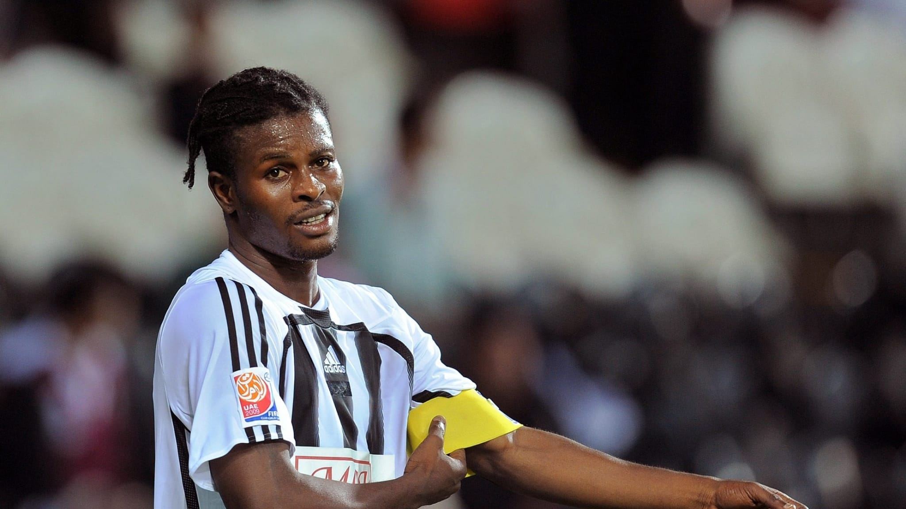
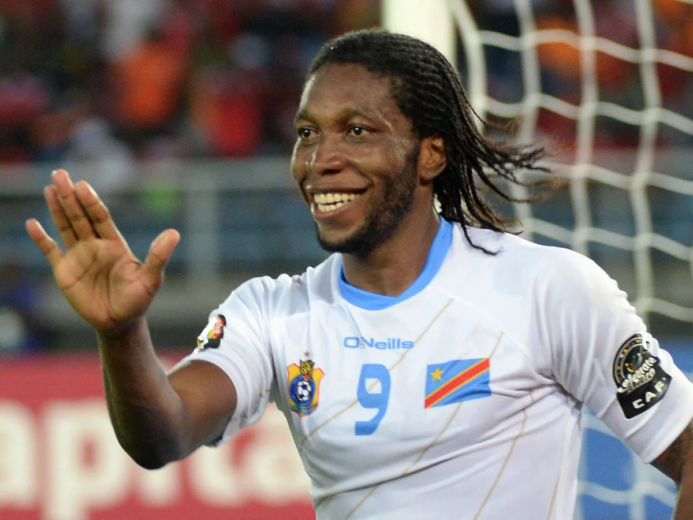

Nombre oficial: Selección de fútbol de la República Democrática del Congo
Confederación: CAF
Capitán: Chancel Mbemba
Director Técnico: Sébastien Desabre
Primera participación mundialista: 1974
Ranking FIFA: Entre las selecciones competitivas de África
• La República Democrática del Congo, anteriormente conocida como Zaire, fue la primera selección del África subsahariana en clasificarse a una Copa Mundial de la FIFA.
• Su debut mundialista ocurrió en Alemania 1974, un hecho histórico para el fútbol africano, aunque no logró superar la fase de grupos.
• En las últimas décadas, la selección ha crecido significativamente y se ha consolidado como una de las potencias emergentes del continente africano.
| Estadística | Datos |
|---|---|
| Participaciones | 1 |
| Títulos Mundiales | 0 |
| Mejor Resultado | Fase de grupos (1974) |
| Última Participación | 1974 |
| Semifinales Alcanzadas | 0 |
| Confederación | CAF |
1974 • 2026

Capitán de la selección y uno de los defensores africanos más destacados de su generación.

Considerado uno de los futbolistas más talentosos en la historia del país.

Delantero histórico que destacó tanto en la selección como en el fútbol europeo.